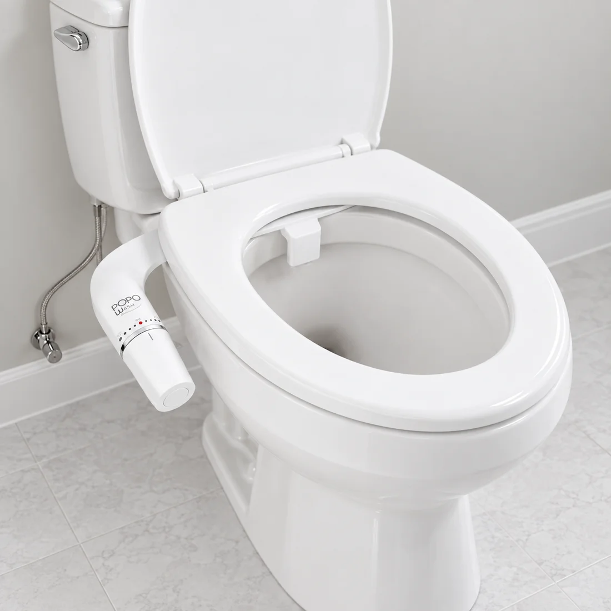
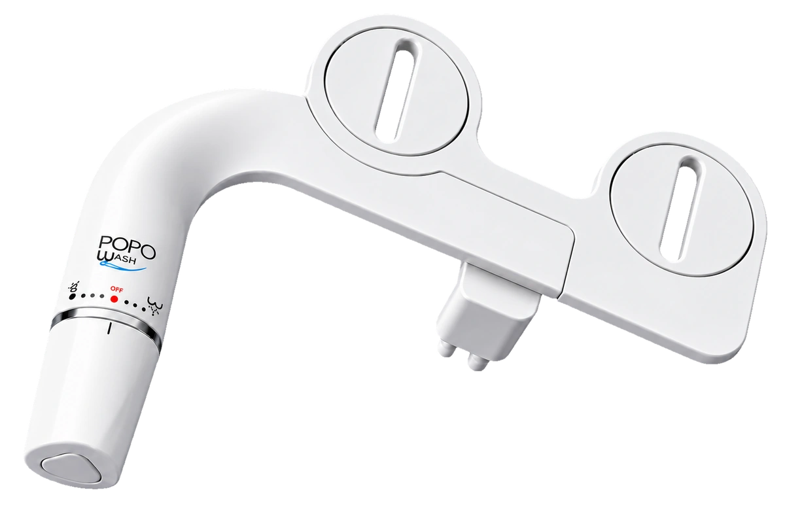
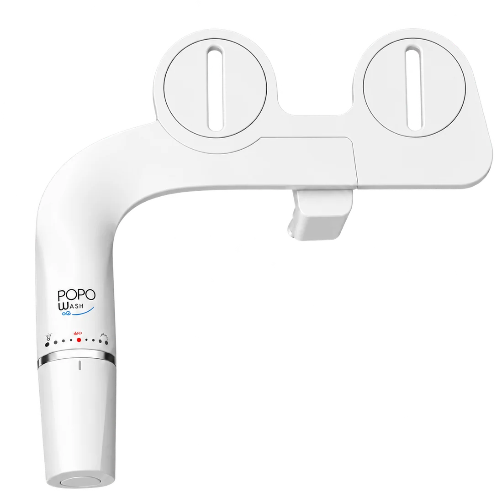
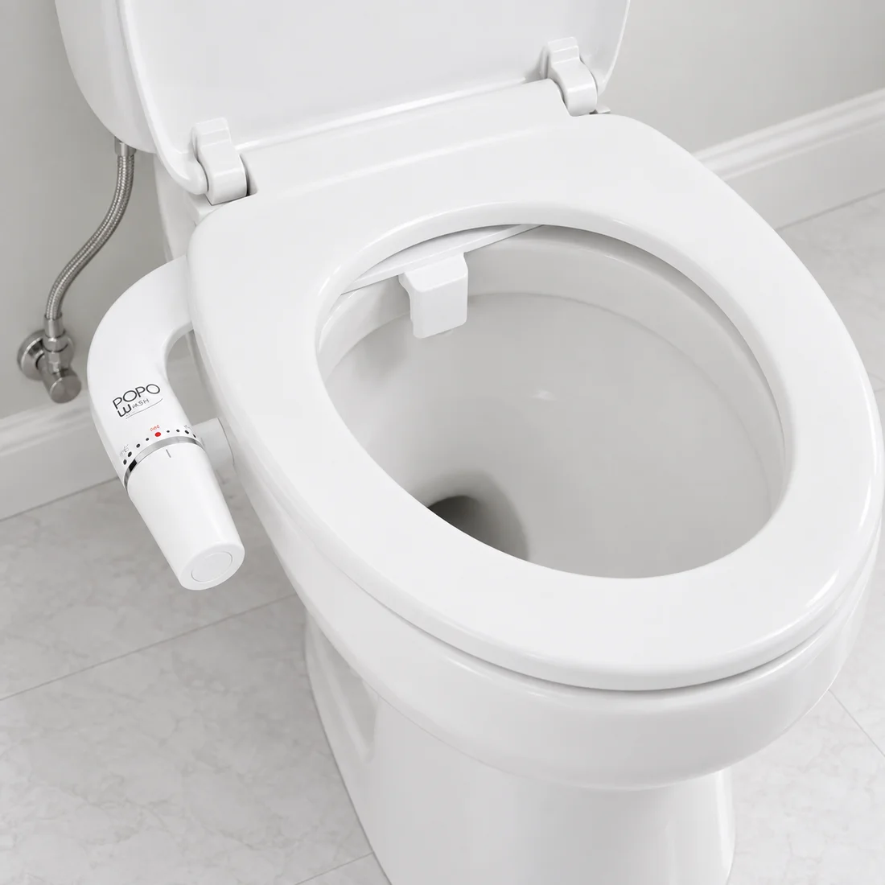
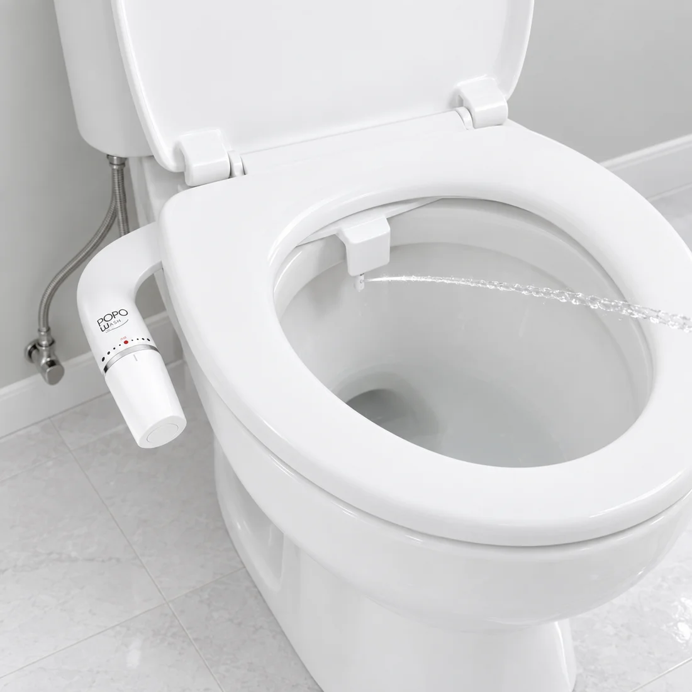
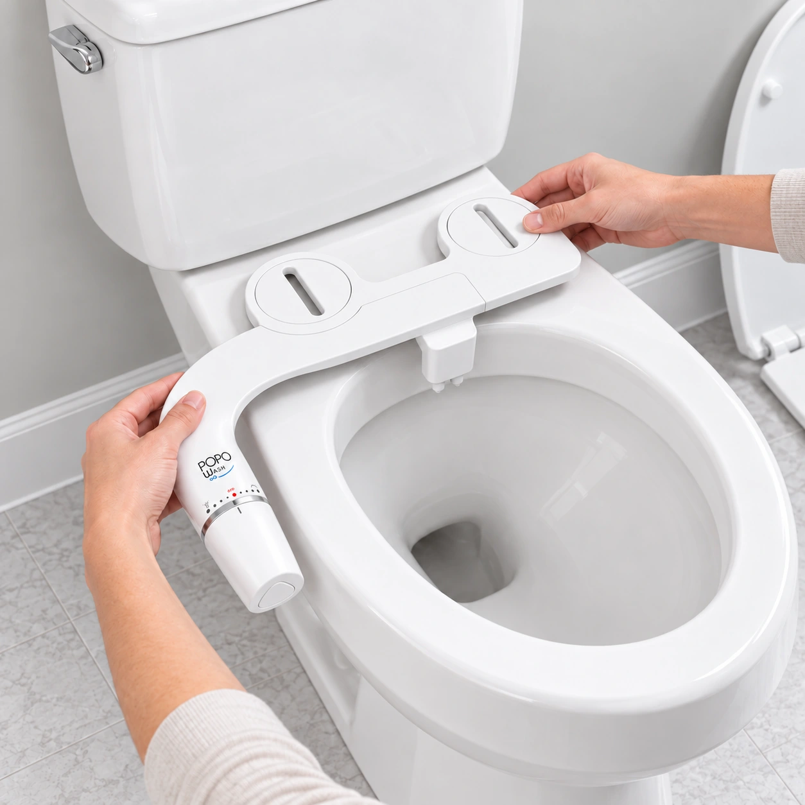
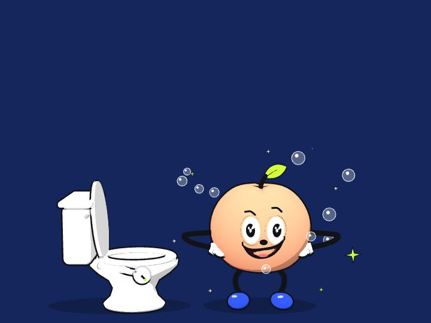

★★★★★
“Pensé que instalarlo iba a ser un cacho. Era mucho más simple.”
Instalación · Ejemplo de reseña
El bidet que lava con agua y se instala bajo el asiento de tu WC.


Se instala bajo el asiento del WC que ya tienes. Sin enchufe, sin gásfiter, sin remodelar.
Elige la cantidad y continúa al carrito.

“Pensé que instalarlo iba a ser un cacho. Era mucho más simple.”
Instalación · Ejemplo de reseña

“Girar la perilla y sentir la diferencia. No vuelvo al puro papel.”
Uso diario · Ejemplo de reseña

“Ahora el papel es para secarme. El rollo dura mucho más.”
Menos papel · Ejemplo de reseña

PopoWash sí. En vez de frotar, restregar y repetir, limpia con agua justo donde más lo necesitas
Si no te limpias las manos con papel, ¿por qué tu poto sí?
Si quedaron huellas, no quedaste limpio.
Una perilla. Dos modos. Cada uno para su zona.
Agua para limpiar el poto después de ir al baño. Después, un poco de papel para secar.
Un chorro suave para limpiar la zona íntima femenina.
Solo uso externo.
Cierra la llave del agua, saca la tapa y el asiento, pon PopoWash debajo y vuelve a fijarlos. Conecta el agua, abre de a poco y revisa que no gotee.
Sentado (sí, sentado), gira la perilla de a poco y sube la presión hasta donde te acomode.
Vuelve la perilla a OFF y sécate con un poco de papel. El rollo pasa a actor secundario.
Paso 0 Tu tapa y tu asiento tienen que poder sacarse.
Paso 1 de 3

Agua para lavar. Papel para secar.
Cuéntanos cuántos viven en casa y calcula cuánto podrías ahorrar en papel.
Resolvamos las dudas antes de girar la perilla.
En general, sirve en inodoros con anclajes accesibles que permiten sacar la tapa y el asiento, colocar PopoWash debajo y volver a fijarlos. También necesitas acceso a la conexión de agua. Si la tapa y el asiento no se pueden desmontar, no se puede instalar.
No. Cierra la llave del agua y saca la tapa y el asiento. Coloca PopoWash sobre los anclajes, vuelve a fijar la tapa y el asiento, y conecta el agua. Abre la llave de a poco y revisa que no gotee.
PopoWash, la manguera, la pieza en T y los adaptadores para conectarlo a la llave de agua de tu WC.
No. Es un bidet mecánico: funciona con la presión del agua de tu casa, sin pilas ni electricidad.
Sale a la temperatura del agua de tu casa. Este modelo no calienta el agua.
No necesariamente. La idea es lavar con agua y usar un poco de papel para secar. Cuánto papel ahorras depende de tus hábitos.
Igual que el resto del baño: no necesita cuidados especiales. Solo revisa de vez en cuando la parte de atrás de PopoWash, porque ahí se puede acumular suciedad.
Sí, despachamos a todo Chile. El costo y el plazo dependen de tu comuna; los informaremos antes del lanzamiento.
Regálate un PopoWash.

PopoWash · bidet mecánico
Te sirve si puedes sacar la tapa y el asiento de tu WC. Revisa compatibilidad
Elige la cantidad y continúa al carrito.